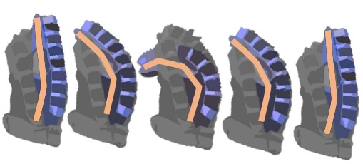
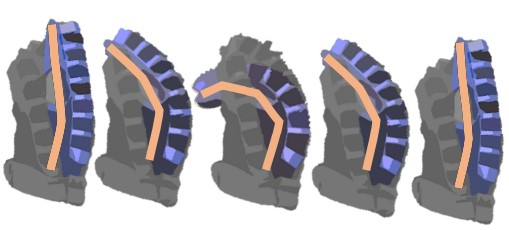

Wearable Rehabilitation Neuromuscular
Robotics Engineering Interfaces
Wearable Robotics
Rehabilitation Engineering
Neuromuscular Interfaces
Curriculum Vitae
Download my CV to see detailed information about my education, research, publications, and professional experience.
Download CVSelected Projects
Neuromuscular Modeling
Estimation of Hand Function


Reinforcement Learning
Control of Pneumatic Hand Exoskeleton
 


Publications
Browse my latest publications related to wearable robotics, neuromuscular interfaces, and more.
- Title of Publication 1 - Journal Name (Year)
- Title of Publication 2 - Journal Name (Year)